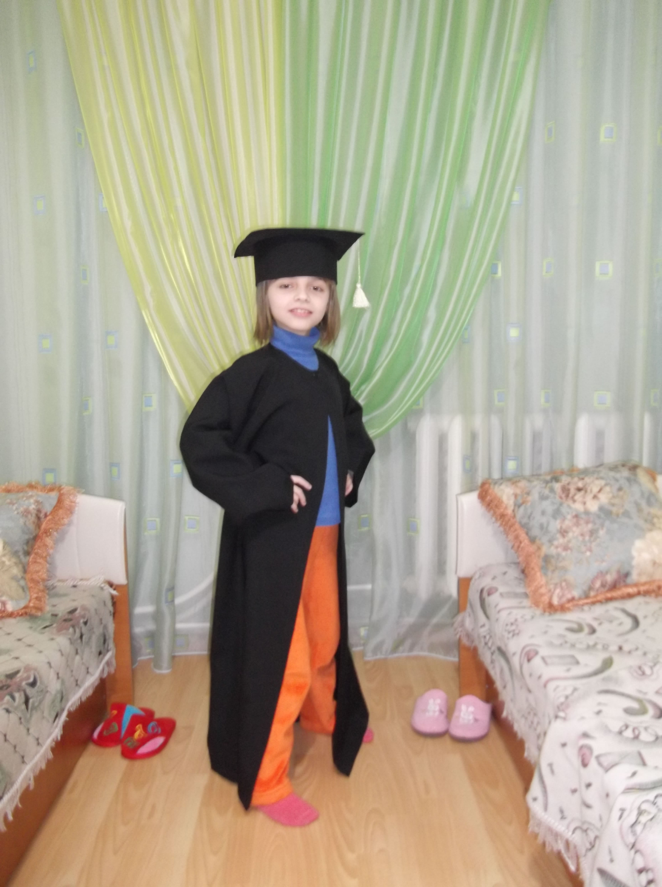
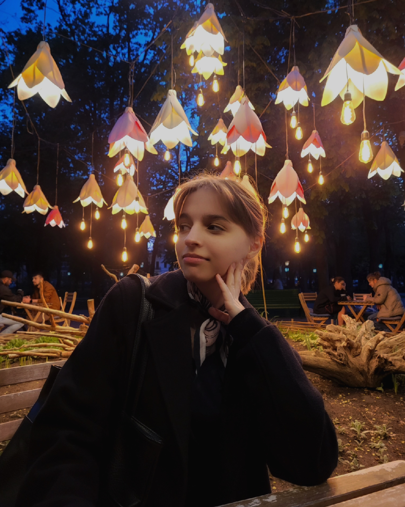

Discipline preferate:
Sunt o adolescenta cu o dorinta uriasa de autocunoastere si dezvoltare a propriului caracter, de aceea incerc mereu sa ma implic in activitati care sa-mi formeze o gandire critica si in acelasi timp sa imi aduca placere.Sunt o persoana sociabila si nu ezit sa le ofer suport prietenilor in momente dificile. Cel mai bine ma simt cu familia mea, pentru ca imi ofera siguranta si multa iubire. O activitate practicata de mine zilnic este pictatul si lecturatul. Deseori plec sa fac plimbari in aer liber pentru a observa cat mai bine si schita tot ce ma inconjoara.
Evolutia mea  